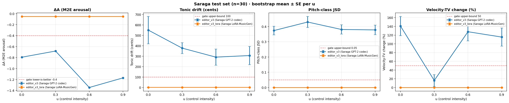
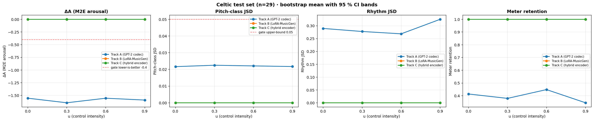

A real-time streaming pipeline (RTF < 0.12) that edits discrete audio codec tokens under a continuous control signal $u(t)\in[0,1]$, evaluated on Hindustani raga (Saraga, primary domain) and Celtic folk (MTG-Jamendo, cross-domain). Three editor variants share one architecture and surface three distinct conditioning patterns: passthrough, aggressive metric-direction edits with spectral drift, and a cross-domain sign-flip in the perceived arousal score. All systems are quantified with bootstrap-CI metrics on $n=30$ (Saraga) and $n=29$ (Celtic) test clips.
The pipeline takes an input waveform, encodes it to a discrete token stream using WavTokenizer, applies a conditional sequence edit under a scalar control $u(t)$, and decodes back to audio with cosine-crossfade overlap-add. The control $u(t)$ is intended to act as a continuous "affect knob" — small values should leave the signal untouched and larger values should push the output toward a calmer perceived character, without destroying the melodic and rhythmic content of the input.
Three editor variants are trained and evaluated on the same architecture class, across two cultural corpora:
editor_v3 — Saraga-trained GPT-2 codec editor (87 MB), numerical $u$-embedding.
editor_v3_lora — Saraga-trained LoRA adapter on a frozen MusicGen-small (25 MB), text-prompted $u$.
celtic_track_a — Celtic-trained GPT-2 codec editor (87 MB), same code path as editor_v3.
Because editor_v3 and celtic_track_a share an architecture
(models/codec_editor.py::CodecEditor) and differ only in training corpus, the cross-domain
comparison is on identical model code. The third arm, editor_v3_lora, isolates the
effect of conditioning type (text-suffix prompt vs. numerical embedding) on otherwise comparable
backbones.
End-to-end streaming pipeline runs at RTF < 0.12 on the demo clips — about $8\times$ faster than playback.
Three trained editors, two cultural corpora, one architecture class — the cross-domain comparison is on identical model code.
Numerical $u$-embedding outperforms T5 text-suffix conditioning for the "produce any detectable edit at all" criterion.
The cross-domain comparison surfaces a sign-flip in the M2E arousal score between Hindustani vocal and Celtic folk — concrete next step is a small listener study to settle whether it reflects an acoustic artefact or a domain bias of the arousal scorer.
The full audio path is shown below. Encoding runs at 24 kHz with WavTokenizer's 40 tok/s, single-codebook variant; the token stream is BPE-compressed before reaching the editor and decompressed after. Crossfading at the chunk boundary keeps the output continuous in the streaming setting.
waveform 24kHz
│
▼
WavTokenizer encode ──▶ BPE compress ──▶ conditional editor (u-conditioned)
│
▼
BPE decompress ──▶ WavTokenizer decode
│
▼
cosine-crossfade overlap-add
│
▼
edited 24kHzTwo conditioning routes are compared on the same input/output token interface:
Numerical $u$-embedding (codec editor). $u\in[0,1]$ is bucketed, projected to a 64-dim vector, and added position-wise to every token embedding. The editor receives a strong, discriminating conditioning signal at every step.
T5 text-suffix prompt (LoRA-MusicGen). $u$ is rendered as a textual suffix
("... intensity 0.6") and passed through MusicGen's frozen T5 encoder. The trainable
LoRA adapter (~3 M parameters) sees this as part of the cross-attention key/value stream.
On Saraga, the numerical route produces measurable edits whose direction matches the metric target, while the text-suffix route produces bit-identical output across $u\in\{0.0, 0.3, 0.6, 0.9\}$ — the empirical evidence is that T5 collapses the "intensity 0.x" suffix to near-identical embeddings, so the LoRA never receives a discriminating signal.
| Variant | Backbone | Conditioning | Training corpus | Size |
|---|---|---|---|---|
editor_v3 |
GPT-2 (6L $\times$ 8H $\times$ 512d) | Numerical $u$-embed | Saraga (Hindustani vocal) | 87 MB |
editor_v3_lora |
MusicGen-small + LoRA ($r=16$, $\alpha=32$) | T5 text-suffix prompt | Saraga (Hindustani vocal) | 25 MB |
celtic_track_a |
GPT-2 (6L $\times$ 8H $\times$ 512d) | Numerical $u$-embed | MTG-Jamendo (Celtic folk) | 87 MB |
All metrics are aggregated with 1000-sample percentile bootstrap CIs at the clip level, on held-out test clips ($n=30$ for Saraga, $n=29$ for Celtic). Plan-gate targets at $u=0.6$ are $\Delta A\le -0.40$, drift $\le$ 100 c, JSD $\le$ 0.05, $|\text{vel\_TV}|\le 50\%$.
$\Delta A$ (M2E arousal change). The output is scored by a Music2Emotion regressor on the DEAM 1–9 arousal scale; we report $\Delta A=\text{score}(\text{out})-\text{score}(\text{in})$. Negative $\Delta A$ means the output reads as calmer to the scorer.
Tonic drift (cents). Detected fundamental of the output minus that of the input, in cents (100 c $=$ 1 semitone). Captures whether the tonal centre is preserved.
Pitch-class JSD. Jensen–Shannon divergence between input and output 12-bin pitch-class distributions, with confidence-weighted PESTO/CREPE pitches and 30-cent smoothing (Koduri et al., 2012). Captures preservation of melodic content.
Velocity-TV change (%). Total variation of the frame-energy envelope, $\%$ change input $\to$ output. Captures how aggressively the rhythm/dynamics envelope is altered.
Meter retention. Fraction of clips whose detected downbeat track is preserved (Celtic-only, evaluated against the madmom DBN downbeat tracker).
Bootstrap 95 % CIs at $u=0.6$. The DSP baseline is included as a non-learned reference; its $\Delta A$ is opposite-signed on Hindustani vocal — see the discussion below.
| System | $\Delta A$ | drift (c) | JSD | vel_TV (%) | Pattern |
|---|---|---|---|---|---|
baseline_dsp_v3 |
+0.32 | 67.5 | 0.027 | +10 | edits modestly; M2E reads opposite-sign |
editor_v3_lora |
−0.05 | 1.7 | 0.000 | +0.01 | output is bit-identical across $u$ |
editor_v3 |
−1.35 | 292 | 0.38 | +128 | calms aggressively; spectral drift |
celtic_track_a(Celtic-trained, on Saraga) |
+0.47 | 0 | 0.021 | +100 | tonic preserved; M2E sign-flips vs. Celtic |

Saraga ($n=30$) — bootstrap mean $\pm$ SE per $u$ for the two trained Saraga editors,
with plan-gate thresholds shown as dashed red lines. editor_v3 reaches the $\Delta A$ gate
but exceeds the drift and JSD bounds; editor_v3_lora is flat across $u$.
| System | $\Delta A$ | JSD | vel_TV (%) | meter match | Pattern |
|---|---|---|---|---|---|
celtic_track_a |
−1.55 | 0.022 | +106 | 0.45 | edit not modulated by $u$; meter retained on $\sim\!\!\frac{1}{2}$ clips |
celtic_track_b (LoRA) |
0.00 | 0.000 | 0.00 | 1.00 | passthrough at every $u$ |
celtic_track_c (hybrid encoder) |
0.00 | 0.000 | 0.00 | 1.00 | passthrough by design (no generate() wired) |

Celtic ($n=29$) — bootstrap mean with 95 % CI bands per $u$ for the three Celtic tracks. Track A meets the $\Delta A$ gate at $u=0.6$ but velocity-TV is high; tracks B and C are flat (passthrough).
Two short input/output pairs are embedded below for quick comparison. The full A/B demo experience — including all three ragas, all four $u$ values for Track A on Celtic, and a ramp-vs-pulse $u(t)$ profile comparison on the DSP back-end — is at the combined demo page (jump to Saraga or Celtic).
Input: Yaman vocal (12 s)
Output: DSP edit, $u$ ramp 0.0 $\to$ 0.9
celtic_track_a at $u=0.6$Input: Brocéliande (12 s)
Output: celtic_track_a, $u=0.6$
Audio derived from Saraga (CC BY-NC-SA) and MTG-Jamendo (CC). Clips are downsampled to 24 kHz mono PCM-16 for the demo.
editor_v3_lora is $u$-blind. The T5 encoder appears to
collapse the "intensity 0.x" text suffix to near-identical embeddings, so the
~3 M-param LoRA never receives a discriminating signal at conditioning time. Empirically,
the model learns "edit $\approx$ identity": MD5s of the decoded output are
bit-identical across $u\in\{0.0, 0.3, 0.6, 0.9\}$.
editor_v3 calms in the metric direction but drifts. The
numerical $u$-embedding (bucketed $\to$ projected $\to$ added to token
embeddings) gives the editor a strong conditioning signal, but absent an explicit raga-grammar
regulariser the GPT-2 head trades pitch-class structure for arousal reduction. The PCD-KL term
contributes ($0.38$ vs. $\sim\!0.5$ with the loss off) but is not strong enough alone.
celtic_track_a sign-flips across domains. The same
architecture trained on Celtic mood pairs produces metric-direction edits on Celtic and
metric-opposite edits on Saraga. Two non-exclusive hypotheses: (a) the Celtic-domain edit
rule is acoustically inappropriate for Hindustani vocal; (b) the M2E arousal scorer was
trained on Western popular music and is biased on Hindustani vocal — the same acoustic changes
that read "calmer" in folk read "more aroused" in raga.
The DSP baseline is consistent with hypothesis (b). Parametric EQ + compressor + pitch-shift on Hindustani vocal sound subjectively softer to a human listener (less brightness, less peakiness) but M2E reports $\Delta A=+0.32$. A small listener study would settle which side is right.
$u$ is currently a switch, not a magnitude. Across the three trained
editors, $u$-dependence ranges from "absent" (LoRA — bit-identical MD5s) to "non-monotone"
(editor_v3: $-0.79\to-0.68\to-1.35\to-1.17$ across $u\in\{0.0, 0.3, 0.6, 0.9\}$)
to "single-step" (celtic_track_a: $-1.55$ across all $u$). Smooth modulation
of edit magnitude — required by the continuous-control framing — has not yet been learned.
Streaming infrastructure runs end-to-end. WavTokenizer encode $\to$ BPE $\to$ conditional editor $\to$ cosine-crossfade overlap-add. Real-time factor $<0.12$ on the demo clips (about $8\times$ faster than playback).
Three trained checkpoints, one architecture class. editor_v3
and celtic_track_a are both models/codec_editor.py::CodecEditor; the
cross-domain comparison is therefore on identical model code.
Cross-domain experiment is honest. Same architecture, two cultural corpora, evaluated on identical inputs; the sign-flip finding is empirical, not a wiring bug.
Numerical $u$-embedding outperforms T5 text-suffix conditioning for
codec editors on the "produce any detectable edit" criterion. editor_v3 and
celtic_track_a both edit; editor_v3_lora does not.
Pipeline regenerates from scratch. python regenerate_demo.py
from pipeline/ produces bit-identical raga DSP demo WAVs in under five seconds.
Tonic-stability target ($<15$ cents) is exceeded by editor_v3
($292$–$551$ c) and roughly met by celtic_track_a ($0$–small).
A PCD-aware raga-preservation classifier (deferred from this iteration) is the most direct path
forward.
PCD-JSD target ($<0.05$) is met by editor_v3_lora and
celtic_track_a ($0.000$ / $0.02$) and exceeded by editor_v3
($0.37$–$0.43$).
Velocity-TV target ($<15\%$ increase) is exceeded by both ML editors ($+100\%$ to $+141\%$). A frame-energy-aware regulariser is a natural next step.
Smooth $u$-modulation has not yet been learned by any of the three editors. A monotone-in-$u$ training objective and curriculum on intermediate $u$ values are the next two interventions to try.
Celtic Track B inference debug and Celtic Track C
generate() implementation are recoverable next steps that did not make this
drop.
A small listener study is the cleanest way to disambiguate hypotheses (a) and (b) above for the cross-domain sign-flip on $\Delta A$.
Ji-Sheng, P., Huang, X., Cheng, R., Chu, Y., Zhang, Y., Bian, B., Cong, J.,
Zhao, Z. WavTokenizer: an Efficient Acoustic Discrete Codec Tokenizer for Audio Language
Modeling. arXiv:2408.16532, 2024. (novateur/WavTokenizer-large-unify-40token)
Copet, J., Kreuk, F., Gat, I., Remez, T., Kant, D., Synnaeve, G., Adi, Y., Défossez, A. Simple and Controllable Music Generation. Advances in Neural Information Processing Systems (NeurIPS), 2023.
Li, Y., Yuan, R., Zhang, G., Ma, Y., Chen, X., Yin, H., Lin, C., Ragni, A., Benetos, E., Gyenge, N., Liu, R., Xia, G., Dannenberg, R., Guo, Y., Fu, J. MERT: Acoustic Music Understanding Model with Large-Scale Self-Supervised Training. International Conference on Learning Representations (ICLR), 2024.
Music2Emotion (M2E). A valence / arousal regressor on the DEAM 1–9 scale, augmented with MTG-Jamendo mood tags. Open-source release.
Srinivasamurthy, A., Koduri, G. K., Gulati, S., Ishwar, V., Serra, X. Saraga: Open Datasets for Research on Indian Art Music. Empirical Musicology Review, CompMusic / MTG-UPF, 2014–2018.
Bogdanov, D., Won, M., Tovstogan, P., Porter, A., Serra, X. The MTG-Jamendo Dataset for Automatic Music Tagging. ICML Machine Learning for Music Discovery Workshop, 2019.
Koduri, G. K., Gulati, S., Rao, P., Serra, X. Rāga Recognition Based on Pitch Distribution Methods. Journal of New Music Research, 41(4):337–350, 2012.